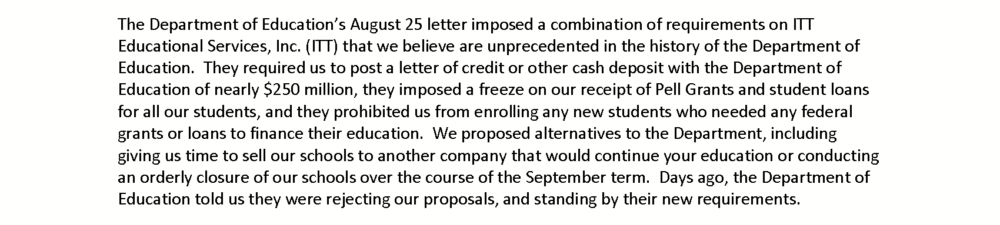
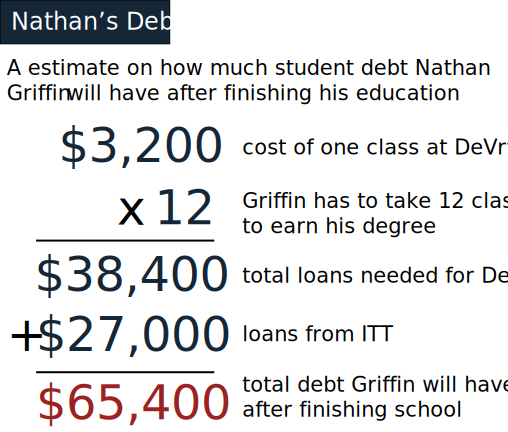
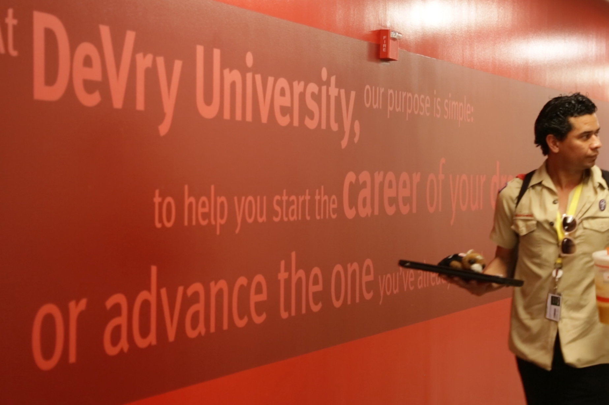

In the aftermath of the closure of ITT Technical Institute, one of the nation’s largest for-profit colleges, students are left with mountains of student debt and no degrees and are still feeling the aftermath eight months later.
At noon on Saturday February 25, 2017 Alvaro Laborin had just finished an exam. As he walked out of the large white, boxy office buildings at the of his college campus in Long Beach, CA, he realized he probably should not drive in his current state.
He had been up for over 24 hours straight.
Laborin drove slowly past the large palm trees lining the entrance of the campus and merged onto the freeway back to East Los Angeles. He needed to stay awake and alert and not attract the attention of the cops. One of the taillights in his car was broken and he didn’t have the money to repair it yet.
If things had gone according to plan, he thought he would have already been on his way to financial stability. He was supposed to get his diploma in December 2016 from a different school - ITT Technical Institute. ITT promised him a career in technology.
Alvaro went to three different high schools before earning his GED from a continuation high school. He joined the Navy the same day he got his diploma.
For many years Alvaro worked as a bartender, and although he enjoyed the work, he now wants more financial stability.
Since returning from the Navy in 2002, Laborin, 36, has worked in retail, as a bartender, an Uber driver and on TV production sets. None of which led to a stable career so money was always tight. “It’s just not enough, it’s not consistent, it’s not steady, especially since I have child support. I'm not a deadbeat dad,” Laborin said.
He wanted this chapter of his life to be over, and start a new chapter, college diploma in hand.
But on September 6, 2016 ITT shutdown.
Suddenly, the way forward wasn’t so clear. And Laborin became one of over 40,000 students nationwide who found themselves facing difficult decisions and were left with mountains of debt from a for-profit school.
ITT opened its doors in 1969 and over the next four decades grew to become one of the largest for-profit college chains in the country. They offered associates, bachelors and masters degrees in areas like information technology, engineering and business. Like other for-profit colleges, they advertised efficiency and job prospects that sounded enticing.
“The investors are the owners and they are in control; all of the questions they are asking the executive management are things that drive the education to be delivered cheaply.” Robert Shireman
For-profit colleges have typically been vocational schools that offer pathways to students pursuing higher education later in life, while working and raising a family. These schools built their business model on the availability of federal financial aid, said Robert Shireman, who previously worked for the Department of Education under the Obama administration and is now researching the history of for-profit colleges at The Century Foundation.
Expanding the availability of federal student aid over the past few decades helped many more people access higher education. However, without clear standards for what an education should look like, it also opened the door for schools that abused the money, Shireman added. What resulted is a vicious cycle that allowed for-profit schools to grow using federal money while failing to provide their students with the education and training they were promised, until they faced federal regulation once these abuses were discovered, only for the cycle to start again whenever the regulations were relaxed. Under the Trump administration this cycle is expected to continue, as federal regulation put in place by the Obama Administration over the past eight years may be loosened.
“This exact same structure, it happened with the GI bill in the 40s, it happened in the 70s, it happened in the late 80s,” Shireman said. “It’s preying on disadvantaged, often desperate people who want to advance and convincing them that they're losers if they don't take steps to address it and that the step they can take is right there in front of them right at that moment.”
Shireman said for-profit colleges sometimes get away with these deceptive practices for while because education is not an easily measured “product.” “We use rough measures like job placement or earnings in a job or student loan defaults but all of those are highly imperfect and they don't arrive until a long time after somebody has been enrolled,” he said.
Because of their reliance on federal student aid, for-profit schools target their advertising to populations who they think will qualify to receive federal loans, and particularly they target low income and minority students, veterans, first generation students, and single parents. ITT poured millions into advertising in the 1990s and 2000s and turned the school into a household name. Their marketing implied that a degree from ITT would help students quickly improve livelihood and build a career fast.
ITT advertised aggressively in the 1990s and 2000s and grew their enrollment rapidly.
Jonathan Ancheta attended ITT’s Sunnyvale campus from 1996 to 1998, when the school was at its peak financially. ITT came to a college fair at his high school, alongside community colleges and public universities, so there was never any indication that it was not a reputable school he said.
“I thought it was a fast track,” he added. “So on paper it made sense. You go through this program, you get a job.” When looking at his local community college, Mission College, Ancheta surprisingly didn’t see a program for software development, which he expected of any school in the Silicon Valley. He also knew community college could take more than two years to complete. ITT offered an alternative, seemingly better to both.
Kara Alba, a lawyer at East Bay Legal Aid, said although community college seems like the obvious better option to outsiders, for-profit colleges provide more infrastructure for financial aid than community colleges. “For some students it’s daunting for others to think about having to work full time while taking classes and not have sort of a straightforward option of full time attendance and then financial aid to pay for living costs,” Alba said. She added that in the communities the schools target it’s often not well known that there are “fraudulent practices” at for-profit schools.
“Coming from a lower-income environment, I thought, this is my ticket out. I didn’t really notice that until afterwards, it really is just a scheme,” Ancheta said.
The 2000s saw a rapid increase in enrollment at colleges like ITT, University of Phoenix, DeVry University and Corinthian Colleges, going from about 400,000 in 2000 to 1.7 million in 2010, according to data from the Department of Education. Effective marketing campaigns and the expansion of online courses allowed for-profit colleges to grow faster than before.
Enrollment at For-Profit Colleges
Source: US Department of Education, College Scorecard
However, for-profit colleges like ITT are often operated more like a business than a public school and most are in fact publicly traded companies. They often answer to their investors before students, and what the investors see as “growth” is enrolling more students, while also keeping costs down. As the schools brought in more money, the investors got richer while insufficient resources were spent on education. The quality of education, graduation rates and positive job placement statistics were an afterthought.
“The investors are the owners and they are in control; all of the questions they are asking the executive management are things that drive the education to be delivered cheaply,” Shireman said. “That drive to be bigger caused the standards to go out the window.”
Ninety seven percent of students at for-profit colleges take out federal loans to pay for their education. However, degrees from for-profit schools don’t lead students to the job prospects and salary the school promised them, because in the job market degrees from ITT are often not valued as much as degrees from a public or private non-profit school. Because of this, students often end up right back where they started – in jobs that don’t require a college degree, unrelated to their field of study, but now with crushing amounts of student debt.
For many students who attended for-profit schools, going to college and taking out loans did not help them improve their economic standing but actually ended up holding them back, said Kara Alba. “It’s pretty horrific.”
“I think it’s hard to grapple with the significance of how many of these students were the first in their families to go to college,” Alba added.
Average Tuition at ITT
Average Tuition at a California Community College
Source: US Department of Education, College Scorecard
In 2013, for-profit college students accounted for almost half of all students who defaulted on their federal loans, even though for-profits only enroll about 12 percent of college students nationwide, according to a study from The Institute for College Access and Success.
Enrollment declined slightly starting in 2011 as the Obama administration began cracking down on the entire industry. The Department of Education put into place rules that weeded out schools that didn’t lead their graduates to “gainful employment.”
In order to qualify for federal financial aid, schools have to prove that their graduates can find “gainful employment in a recognized profession,” which means they get hired in the profession they went to school for. A Debt to Earnings Rate is calculated for degree programs that come under review, by taking the average annual loan payment and dividing it by the average annual earnings for a graduate of that program.
This graph shows the number of degree programs that were under review at ITT and other large for-profit colleges, and how many were deemed passed, were in between or failed.
This graph shows how the 39 ITT degree programs under review ranked for average annual loan repayment amount compared to average annual earnings.
Source: U.S. Department of Education, Gainful Employment data
The Obama administration’s crackdown led to the closure of two for-profit chains: Corinthian Colleges in 2015 and ITT in 2016.
In ITT’s case, 15 years of separate lawsuits and complaints filed against the school alleged that ITT falsified student grades in order to access more federal aid, used deceptive advertising to mislead students into thinking they were guaranteed jobs they couldn’t actually get and lied to students about true cost of their education. Multiple students said that ITT’s financial aid department would not answer their questions clearly about how their loan money was spent and how much of it the school would take.
While ITT declared bankruptcy and top executives walked away without any other major repercussions, students were left with the consequences, and the options the federal goverment provided were often not enough to help students recover from their predicament.
ITT announced their closure in an email to students, blaming it on “a series of new requirements and conditions,” imposed by the Department of Education.
A portion of the letter ITT sent students announcing their closure

Former students and teachers said the shutdown came as a shock.
At many campuses, rumors that something was amiss started popping up around June. Students said ITT sent emails in July informing them of the ongoing discussions with the Department of Education but there was never any indication that the situation was dire.
“The last two months...everybody got this worried look on their face,” said Nathan Griffin, a former ITT student. “When you walked into the school you could literally feel the energy, like something was wrong.”
On September 5, the day before ITT closed, Griffin went to his evening class at the ITT campus in Torrance, CA. He was three months away from graduating with an associate’s degree in network systems administration. For weeks he’d been asking his teachers, the administration, anyone who would listen, if the school was in trouble.
The administrative staff at the Torrance campus started pulling people out of class and hounding them to re-submit their application for federal student aid if they hadn’t done so. Fewer and fewer students were showing up to class. The office staff seemed to change every couple weeks.
Something felt off, but no one would tell him anything, he said. The only person who was somewhat straight forward with Griffin was the woman who ran their career-counseling department. When she left she told Griffin she didn’t like the direction the school was heading, but wouldn’t tell him why.
"I took school seriously. ITT was supposed to be my way out of doing security work. I don't have time to go back to school...I have a growing family." Nathan Griffin
Students did not yet know that the Department of Education had begun to question ITT’s financial stability. In 2014, the Consumer Finance Protection Bureau sued ITT for pushing students into high-interest private loans that they would likely not be able to pay back. In 2015, the Securities and Exchange Commission sued ITT and two top executives claiming that the company was not upfront with investors about the looming financial impact of private loan programs. In August 2016 they banned the school from enrolling any new students who receive federal financial aid.
Over 90 percent of ITT students took out federal aid to pay for their degrees, so this cut off ITT from its main source of revenue and they declared bankruptcy. Students who were still enrolled were left with no degrees, credits that weren’t easily transferable to many schools, years of their life wasted and tons of student debt. And many students truly believed that ITT would help them advance.
ITT declared bankrupcy in September. Creditors, federal regulators, state attorney generals, ex-employees and students are fighting for the company's remaining assets in bankrupcy court.
Students and employees showed up to ITT campuses on September 6 to find the buildings locked.
Griffin went straight to work after class ended at 10pm as he always did — a night shift working as a security guard for an information technology company. Then at 6am, the end of his shift, a news report aired on TV — ITT was closing.
“I took school seriously. ITT was supposed to be my way out of doing security work,” Griffin said. Griffin and his wife are expecting a daughter in July. He was banking on his ITT degree to help him find a higher paying job in order to provide for his family. He didn’t consider community college because it seemed like a slower option that wouldn’t given him the time to work two jobs and before he enrolled he had no reason to believe ITT was not everything they advertised.
About a week after ITT closed, Griffin and five other ITT classmates gathered in the living room of his one bedroom apartment in Long Beach. They were frantically calling other colleges to find out where they could transfer their credits.
“We were all panicking in my little group,” Griffin said.

For students like Griffin the closure of ITT was especially devastating because they put months or years of time into the school and now have little to show for it, except student debt. And Griffin knows that debt will follow him for years.
“As soon as you sign the FAFSA it tells you, no matter what you do, you can’t go to bankruptcy, you can’t get this off your credit, no matter what you do they’re going to come get you for their money,” he said.
Griffin already has $27,000 in federal student loans.
Students who were still enrolled when ITT closed can apply to get their federal loans forgiven through a federal government program called Closed School Discharge. California students can apply for relief on private loans through the state’s Student Tuition Recovery Fund.
However, lawyers familiar with helping students apply for loan forgiveness say that process isn’t always straightforward, and it has become especially murky under the new administration. Josephine Lee, a lawyer with the Legal Aid Foundation of Los Angeles, said she hasn’t seen movement on any loan forgiveness applications since January, even for those who submitted their paperwork earlier. In the past it’s taken 12 to 18 months for an application to be processed, but interest is still growing on the loans during that time. Lee said lawyers like her are struggling to know how to advise clients and are trying to gain more clarity on what any future changes may be.
“We really are trying to focus on what advocates can do to address some regulatory changes that may be coming down the pipeline,” Lee added.
She said it’s also difficult to make sure people know they have legal options. “Individuals may see it as a personal fault or a personal problem,” she said. “When really they have to recognize...that this is a systemic issue...there are so many other people who were defrauded, that they were actually victims of a scheme.”
“With that name recognition. I think comes a sense of legitimacy that may not actually be present in the schools,” Josephine Lee
ITT was a well-known household name and their deceptive practices may still not be widely known to the general public, Lee said. “With that name recognition. I think comes a sense of legitimacy that may not actually be present in the schools,” she added.
Students also have the option to try and transfer their credits to another school. But often only other for-profit colleges accept transfer credits from for-profit colleges and many students have found that even those schools don’t accept all of their credits.
“For some it might be worth it,” Lee said, but adds that students need legal advice to decide that, and many don’t know to seek it out.
Griffin didn’t seek legal advice. He said he was determined to get his degree soon despite the additional loans he’ll have to take out. “I need to complete it while I got the chance because if I leave it, there’s no guarantee I’m coming back,” he said.
Nathan and his wife Meliza are expecting a child in July.
Nathan is orginally from Montgomery, Alabama and has a daughter in Alabama who he also provides for.
Already his time is limited, he said, and when his daughter is born in July he plans on quitting one of his jobs. Griffin said he needs the boost a college degree can give him now, so he can provide for his family. When ITT closed, Griffin had to choose between starting his education over and transferring to any school that would accept his credits. He decided to transfer to DeVry University, even though they only accepted 12 of his 40 credits.
He added that he didn’t have time to start school from the beginning. “I have a growing family,” he said. Going to another for-profit school doesn’t worry him because he feels his experience at DeVry has been miles better than ITT. However, his wife, Meliza Griffin, remains a little wary. She’s a cosmetologist and has a few friends who went to Marinello School of Beauty, another for-profit that was shut down recently. “I don’t know what’s going on with all these schools now,” she said.
Originally Griffin was working towards a bachelor’s degree, but DeVry didn’t take all of his credits so he cannot afford to take out the loans needed to stay in school for that long. He’s now working towards getting his associate's degree in December 2017.
Griffin’s classmate Manuel Valdovinos opted to apply for the loan forgiveness. He was one quarter away from graduation as well but going to another for-profit school made him nervous.
Both he and Griffin were drawn to ITT from seeing the commercials during their childhood.
During a moment of desperation in 2014, Valdovinos remembered those ITT commercials. He was working for a catering company at the Los Angeles International Airport (LAX) five days a week and at a car rental company three days a week; after a day at LAX when everything seemed to go wrong, Valdovinos desperately wanted a change.
“It just got me thinking, I can’t do this for the rest of my life, I’m going to go insane,” he said.
His previous attempts at enrolling at his local community college, El Camino Community College, were unsuccessful because the school claimed they could not verify his high school diploma because he attended school in Mexico.
“Why is this being allowed, all these schools popping out of nowhere and then claiming they can get you that job of your dreams?” Manuel Valdovinos
But ITT wasn’t the jump-start he hoped for and this experience has made him wary of other for-profit schools. “Why is this being allowed, all these schools popping out of nowhere and then claiming they can get you that job of your dreams?” Valdovinos said. “They have no real obligation to do so.”
While his classmates, like Griffin, decided to transfer to DeVry, Valdovinos was suspicious that they wouldn’t take all of his credits. To him it seemed like another scheme but he wasn’t able to convince his friends of that.
Valdovinos has two younger brothers who opted to attend California’s public universities and community colleges. Seeing their trajectory showed him that although it would take longer, going to a community college and then a four-year public university would serve him better in the long run.
“Eventually I do want to go back, to a real school this time,” Valdovinos said.
He opted to to get his ITT loans discharged, a process he wouldn’t have been able to navigate without his brother who works as banker. He managed to get his paperwork approved before the new administration took over and in early January he got confirmation that his loans were forgiven. But almost four years later he still works those two jobs at LAX and Enterprise Rent-a-Car, and is no closer to earning a college degree.
ITT’s closure had a widespread impact, beyond just the students. About 8,000 teachers and administrators were left jobless when the school closed. Ryan Logsdon, the director of academics at the Oakland campus, said administrators and teachers were informed about the closure through an automated telephone call on September 4. They also did not have prior knowledge that the school may be shut down.
Logsdon sees ITT’s closure as devastating for the population that for-profit schools serve because he was once one of those students. Many instructors at for-profit colleges are also former students.
“My last 10 years of employment and education, both schools were shut down by the government.” Ryan Logsdon
Logsdon attended Heald College (which later became part of the Corinthian colleges chain) in the early 2000s. At the time he was a single father raising a young daughter and Heald College offered him the flexibility he needed to work while attending school. He then went on to teach at Heald and eventually join the administration. When Heald and the other colleges managed by Corinthian closed in 2015, Logsdon joined ITT’s Oakland campus to manage their academics department. He saw his Oakland campus as thriving. “We doubled the population of the campus,” he said referring to the student population.
But then ITT also closed a year and half later.
He said he feels the accusations against ITT about low job placement rates are baseless. “ “There was no methodology from our accrediting body for reporting the placement rates,” he said.
In fact, the agency that accredited ITT, the Accrediting Council for Independent Colleges and Schools (ACICS), was also under investigation by the federal government from September to December 2016 for continuing to accredit schools like ITT, even when they showed high student loan default rates and poor financial performance. In December the Department of Education shut down ACICS, a last attempt to enforce regulation before the new administration took over.
Logsdon has been unemployed for about eight months now, and he suspects it might be because his last 12 years of employment were at schools that shut down. One interviewer told him they could not verify his education or employment with Heald. “It probably sounds pretty strange when I'm in interviewing,” he said. “My last 10 years of employment and education, both schools were shut down by the government.”
IIn November, about two months after ITT closed, Ancheta attended a student debt workshop run by several legal aid organizations in the Berkeley-Oakland area. He’d long since resigned himself to the fact that his loans from ITT would follow him throughout his life, but the closure made him think he might have another option now.
“I was paying the minimum amount, I should have been more proactive,” Ancheta said about his loans, adding that he felt “betrayed” by the school and that feeling only got worse when the loan payments started coming in. “It kind of left a bad taste in my mouth.”
The workshop Ancheta attended in November 2016 had one resounding theme: that rules and regulations put in place over the past eight years may change under the Trump administration.
President Donald Trump himself settled a lawsuit against filed against Trump University, which was not accredited and didn’t receive federal aid, but used similar recruiting tactics as publicly traded for-profit schools. Additionally, Secretary of Education Betsy DeVos is an advocate for privatizing K-12 education, although her position on higher education is still unclear.
“Basically from the department and Congress all indications are that they are going to get rid of some of the rules that the Obama administration put in place,” said Stephen Burd, a senior policy analyst with the Education Policy program at New America, a think tank focused on politics and policy.
Almost four months into the new administration, and changes to rules and regulation on for-profits colleges are still murky. In October, the Department of Education announced a settlement agreement with DeVry University over accusations that Devry used false and misleading job placement statistics in advertising and recruitment. After the election DeVry Education Group’s stock price jumped from $22.80 on November 7, 2016 to $27.85 on November 10th, 2016, a sign that the company and its investors expect rules may be loosened now.
DeVry University's Stock Price
DeVry University's stock price jumped on election day and has continued to rise in the months after. Source: Yahoo Finance
Many former ITT students are just now realizing how these larger political moves affect their lives.
In March Alvaro Laborin was at a crossroads. He had transferred his credits to DeVry University in October and now after two quarters there, he wasn’t sure how many more loans could take out to finish by December 2017. He had already had $32,000 in loans from ITT. After some initial hesitation, he enrolled in two more classes at DeVry University.
The walls of Alvaro's small room in his grandfather's basement are filled with his belongings and various odds and ends hes picked up over the years.
On a Monday morning in March Laborin navigated around large piles of cds, books and various odds and ends littering his small room in the basement of his grandfather’s house. Laborin was late for class, which meant he wouldn’t have time to pick up his food stamps before class. But he hoped he wouldn’t be struggling for much longer.
In his eyes, DeVry is miles different from ITT. In March, a lawyer started calling Laborin incessantly urging him to apply for loan forgiveness while he still can. Laborin said the lawyer, whose name he can’t recall, warned him that DeVry recently faced their own legal action by the federal government.
In October 2016, the Department of Education announced a settlement agreement with DeVry University over accusations that Devry used false and misleading job placement statistics in advertising and recruitment.

But Laborin said that doesn’t phase him, he just wants his degree. “I don’t want to hear it," he said after arriving at the DeVry University campus in Pomona, CA. While walking the hallways he paused next a large red mural with the words, “DeVry University, our purpose is simple, to help you start the career of your dreams, or advance the one you’ve already started.” “This is my favorite,” Laborin said.
Laborin does not see another option. He’s hoping two more quarters at DeVry will finally get him a college degree.